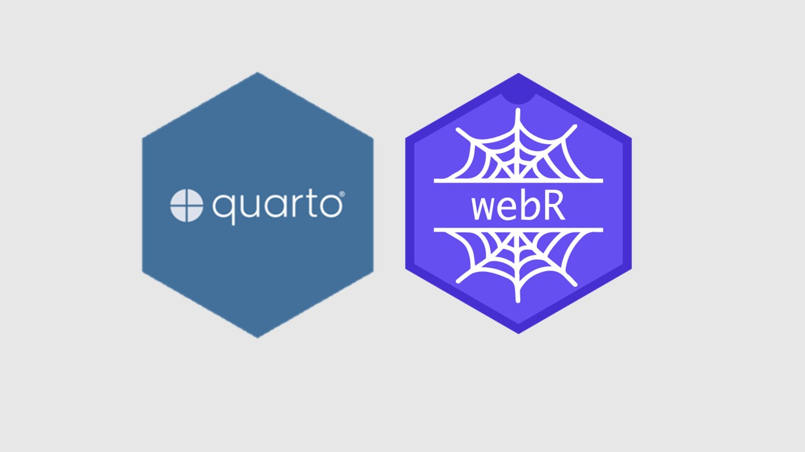

I have always wanted to create a blog using R programming language and I finally got to it when I first heard about Quarto at the RStudio conference 2022. Since then, the open-source publishing system continues to amaze me with its capabilities beyond my imagination. One new development I learnt at the recent Posit Conference 2023 was the ability to make Quarto html documents dynamic using webR. Given that this blog was built using Quarto, the aim of this blog post is to showcase webR’s ability to embed and run R codes directly within this blog without the need for a supporting R server.

WebR
I also first heard of WebR at the Rstudio conference 2022 from a 5-min presentation by George Stagg, who is one of the core developers behind it. As the name suggests, WebR is a version of the R programming language that is able to run on a web browser. This is made possible by compiling R for a web browser using a technology called WebAssembly via the Emscripten compiler. This is indeed revolutionary as this creates the possibility of coding by simply going onto a website without the technical hassles of installing any software. While this innovative creation is probably still at its early development stage, a publicly accessible online R console is already available here. The 0.1.0 version of webR has been released earlier this year in March 2023, and the 0.2.0 version was released recently in August 2023.
WebR Extension in Quarto
Last month, I travelled to Chicago to attend my first Posit Conference in person, and there were several talks on new developments in Quarto. One exciting extension is the talk by James Balamuta on incorporating WebR into Quarto documents. While Quarto is able to publish code chunks and its outputs in the same document, the extension of WebR makes it dynamic by allowing interactive code cells.
For example, click the Run Code button below and it will generate the code output within this document. Importantly, it is interactive. You may input your own R codes in the same cell and it will generate the output accordingly.
Isn’t that amazing?!
You would need to download the quarto-webr extension to activate this capability, in which James Balamuta created a great video guide on how to set this up (Please see Section 5). After downloading the extension, the interactive code cell above is created simply by specifying {webr-r} as the programming language name instead of {r} in the quarto markdown file.
```{{webr-r}}
# This is interactive!
# You may input your own code here and run the code accordingly
print("Hello Quarto and WebR")
```Can we import R packages?
Obviously, we often need to install and load packages to help us achieve our tasks on R. For example, we may want to install ggplot2 package for data visualisation. We can do this using the webr::install function. Please note that it would take a short while for the installation to complete.
Once the downloading of package is complete, we may proceed with loading and using the package in the typical manner akin to on Rstudio. click the Run Code buttons below to load the ggplot2 package and create a data visualisation of the mpg dataset.
Typically, in Rstudio, we would install packages from CRAN that download the files into our local computer system. However, in the context of WebR, packages are downloaded from a WebR repository instead. Similarly, WebR allows users to install packages interactively. Alternatively, packages can be pre-specified to install when opening the Quarto document, in which will incur a duration for it to load.
Please note that not all packages are available on the WebR repository. At the point of writing this post, there are a total of 10,463 R packages with their package dependencies available in the repository. You can check a package’s availability in this link.
Practical Implications
Teaching R
Teaching a programming language class is typically chaotic due to numerous technical issues faced by students and their lack of ability to debug them. Indeed, this was mentioned as the motivation behind the quarto-webr extension development in James Balamuta’s talk. Although Posit Cloud fills this gap, it is unfortunately a paid service. Thus, WebR is potentially a game-changer in this area, which sort of allows you to turn your class into a ‘DataCamp’. In a nutshell, the incorporation of WebR makes life easier for both instructors and students who are teaching and learning R.
Reproducible Analysis and Reports
A key tenet of sound scientific practice is that study findings should be replicable and reproducible by others. This is one of the primary motivations to encourage usage of open-source tools for data analysis, which are accessible to everyone for replication. Notebooks such as Quarto are great mediums to support this reproducibility movement in science and WebR nicely complements it in making the codes easily executable on a web browser.
Useful links
If you are excited about webR like me, you may find out more information from the following useful links.
- WebR 0.1.0 has been released - Blog post on the release of WebR 0.1.0 by George Stagg
- WebR 0.2.0 has been released - Blog post on the release of WebR 0.2.0 by George Stagg
- WebR - R in the Browser - Documentation of WebR’s usage
- Creating your first webR-powered Quarto Document- Youtube video guide on setting up WebR on Quarto by James Balamuta
- Quarto-webr - Documentation of the Quarto’s WebR extension
Round-Up
This blog post demonstrates the ability of incorporating WebR in a Quarto document, which allows running of R codes directly on the web browser. The possibility of making Quarto documents dynamic and interactive definitely have many useful applications. I am excited to learn more developments in the future and I hope you are as well!